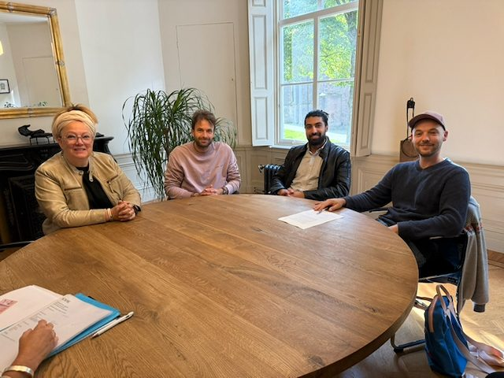

Stichting Reeland voor Elkaar
Reeland voor Elkaar is een van de 24 trekkingsgebieden van het Ondernemersfonds Dordrecht. Wij beheren het deel dat voor het Reeland bestemd is. Ons doel: de economische structuur en het vestigingsklimaat in het gebied versterken, en initiatieven van ondernemers steunen die ook maatschappelijk van belang zijn.

Bestuur
Drie ondernemers uit het Reeland. Ze zitten in het bestuur op persoonlijke titel, niet namens hun eigen bedrijf. We zoeken nog versterking: ben jij ondernemer in het Reeland en wil je meedenken? Laat het ons weten.
- Jolita Meuldijkvoorzitter. Eigenaar van Het Schapenhok aan de Reeweg Oost.
- Akhshid Ziapenningmeester. Ondernemer van PLUS Vogelplein, de supermarkt op het Vogelplein.
- Wouter Sieuwertsbestuurslid. Eigenaar van Tolly Wolly Studio en Lexlab aan de Bötgensstraat.
Contact en gegevens
Vragen, twijfel of je erbij hoort, of wil je je plan eerst bespreken? Mail ons. Je bent ook welkom om vooraf een vergadering bij te wonen.
- voorzitter@reelandvoorelkaar.nl
- KvK
- 98417975
- RSIN
- 868484957
- Opgericht
- 25 september 2025, statutair gevestigd in Dordrecht
- Onderdeel van
- ONS Dordrecht, het Ondernemersfonds Dordrecht, trekkingsgebied 15